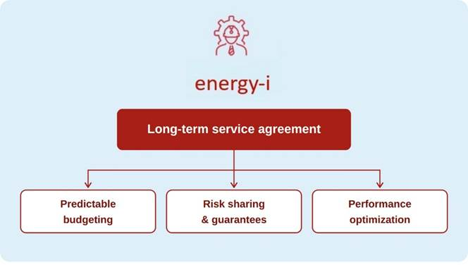
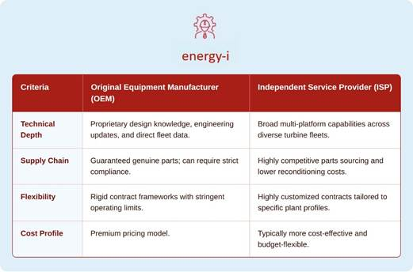
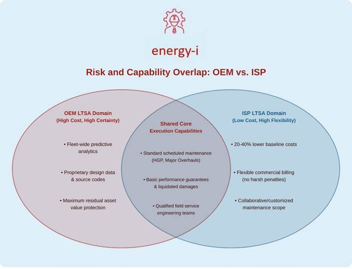

Long Term Service Agreements (LTSAs)
LTSA expertise and
Support services
negotiation,
re-negotiation, operation,
and avoiding the pitfalls
We work with, advise and assist our clients on negotiating and re-negotiating Long Term Service Agreements (LTSAs).
We are experts in negotiating and implementing LTSAs which seamlessly transition from EPC phase to operational phase of a plant lifecycle, and crucially meet the requirements of financiers and lenders.
We are experts in negotiating and implementing innovative LTSAs from Independent Services Providers (ISPs) to provide levels of service which equal or exceed Original Equipment Manufacturer (OEM) LTSAs.
An LTSA what is it?
A gas turbine Long Term Service Agreement (LTSA) is a commercial contract between a power plant Owner and an Original Equipment Manufacturer (OEM) or Independent Service Provider (ISP), outlining the split of operational, maintenance, and financial responsibilities over the lifecycle of the gas turbine based plant.

Turbine Maintenance Repair Overhaul (MRO)
The global market for gas turbine maintenance, repair, and overhaul (MRO) services is projected to exceed USD$35 billion (EURO 31.15 bn) by 2030.
Why?
An ageing fleet of E and F class gas turbines globally which are being retained in service as necessary dispatchable back-up capacity for intermittent renewables.
Increasing levels of gas fired generation in emerging markets as they roll out intermittent renewables
and;
New Independent Service Provider (ISP) offerings which equal or exceed Original
Equipment Manufacturer (OEM) contract offerings.
OEM versus ISP LTSAs

Why LTSAs
In the project finance structure of major power generation facilities commercial lenders require an LTSA as a project key requirement to satisfy the "bankability" of the project.
Originally the only party offering an LTSA to satisfy this requirement was the Original Equipment Manufacturer (OEM).
However as the market has matured non OEM LTSAs have become increasingly acceptable for new- build.
As original OEM LTSAs have reached break-contract or end of contract milestones owners are looking at other options.
What Makes an LTSA Acceptable to lenders?
When a lenders Independent Engineer audits any LTSA either OEM or ISP they look for a number of key elements to ensure the loan is secure:
LTSA Key Element 1
The "Back-to-Back" Risk Wrap
The LTSA must have a "Back-to-Back" Risk Wrap. This is a contractual mechanism designed to eliminate gaps in risk, liability, and performance guarantees between two distinct phases (contracts) in a project lifecycle
Phase 1 - the Engineering, Procurement, and Construction (EPC) phase, under for example, FIDIC Silver Book contract framework
And;
Phase 2 - the operating phase under the LTSA contract.
Navigating the complex transition;
energy-i have successfully navigated and negotiated this complex transition for multiple stakeholders, fully meeting the “bankability” requirements of finance providers.
Options for owners - better LTSA terms;
energy-i pro-actively do this at an early stage, and even if the owner ultimately decides to go down the OEM LTSA route rather than the ISP LTSA route having options ensures better LTSA terms.
EPC and LTSA - key activities and milestones:
Under EPC contract frameworks, such as FIDIC Silver Book there are a number of key contract milestones which are relevant may be “wrapped” into the LTSA
These include;
Tests on Completion:
The Performance test and the Reliability Run as well as the associated pre-commissioning and commissioning tests to ensure the plant meets the performance criteria specified by the plant owner and the lender (Employers Requirements)
Taking-Over / Taking-Over Certificate:
A full Acceptance Certificate (FAC) issued when the works are complete, tested, and ready for use.
LTSA Key Element 2
Turbine Availability Guarantees
The LTSA must match the industry-standard Equivalent Availability Factor (EAF) parameters (usually 92% to 95%+ availability) to ensure predictable cash flow for debt service.
LTSA Key Element 3
Spare parts Sourcing and availability
The LTSA must ensure access to a certified capital spare parts, particularly hot gas path parts and ensuring the plant is protected against any restrictive market controls e.g. hot gas path metallurgy

Scope split and issues to Watch
The split of cope of activities between the owner and the LTSA provider is a key part of negotiating or re-negotiating an LTSA
A typical scope division for a standard Gas Turbine (CCGT and OCGT) Long Term Service Agreement (LTSA) is set out below.
|
Phase & Activity |
Plant Owner |
LTSA Provider |
|
1. Program Management & Engineering |
||
|
Turbine data analytics, life-consumption tracking, & outage intervals |
Review & Approve |
Primary (Lead) |
|
Outage schedule optimization & grid coordination |
Primary (Lead) |
Support |
|
Root Cause Analysis (RCA) for covered component failures |
Support |
Primary (Lead) |
|
2. Parts Supply & Refurbishment |
||
|
Supply of new/refurbished capital parts (Buckets/Blades, Nozzles/Vanes) |
N/A |
Primary (Supply) |
|
Provision of consumables & standard hardware (gaskets, nuts, bolts) |
Primary (Supply) |
Specification |
|
Off-site component repair, advanced coatings, & metallurgical analysis |
N/A |
Primary (Execute) |
|
Ownership and disposal of replaced capital parts (scrap metal value) |
Primary (Owns) |
N/A |
|
3. Outage Mobilisation & Logistics |
||
|
Standard site cranes (overhead/mobile) & heavy rigging equipment |
Primary (Supply) |
Specification |
|
Specialized rotor lifting fixtures & OEM-specific tooling |
Support (Storage) |
Primary (Supply) |
|
Scaffolding, temporary power, lighting, and breathing air |
Primary (Supply) |
N/A |
|
4. On-Site Outage Execution |
||
|
Technical Field Assistance (TFA) & specialized engineering direction |
N/A |
Primary (Lead) |
|
Mechanical & electrical craft labour (Turnkey approach) |
Optional (FTE Split) |
Primary (Provide) |
|
Lock-Out/Tag-Out (LOTO), permit issuance, & balance-of-plant safety |
Primary (Owns) |
Compliance |
|
Rotor transport, shop balancing, and de-stacking (if required) |
Logistics Support |
Primary (Execute) |
|
5. Commissioning & Operational Support |
||
|
Gas turbine startup, grid synchronization, and baseline operation |
Primary (Operate) |
Advisory |
|
Dry Low NOx (DLN) combustion tuning & emissions verification |
Support |
Primary (Lead) |
|
Continuous 24/7 Remote Monitoring & Diagnostics (M&D) |
Review alerts |
Primary (Continuous) |
Issues to watch;
Excluded Scope: Intake filters, exhaust ducting, generator maintenance, balance of plant (BOP), and operational profile violations.
Liquidated Damages (LDs): Service provider caps liabilities tied to Availability, Reliability, and Heat Rate performance metrics, usually as a % of annual fee.